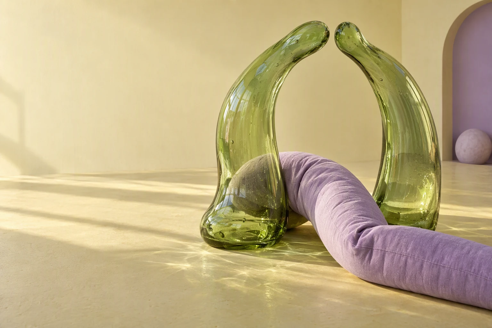

A PODCAST. EIGHT VISUAL WORLDS.
一种声音。
八种性格。
his.fm 品牌视觉提案
声音里，有具体的生活。
01 当前设计
02—08 全新方向↓
IDENTITY / EDITORIAL / DIGITALHuman,
by nature.完整字标 · 双层封面 · 网站 · 品牌应用
HIS.FM
202608 / BRAND WORLDS24 / SERIES COVERS32 / STATIC WEB PAGES28 / NEW GENERATED IMAGES
ROUND 01 / FIRST EXPLORATIONS现有森林、编辑实验、感官雕塑与独立刊物。
ROUND 02 / AT YOUR OWN PACE
声音里，
有一处安静。
雾林、孤岛、通勤列车与雪线花朵。
风景里有留白，耳边有自己的时间。
05—08THE SAME VOICE. A DIFFERENT FEEL.
先看封面，
再走进喜欢的那一套。
每套使用相同的三组选题，方便比较。可以单独查看生成主体、透明 Cover 和叠加成品，下载对应的 SVG 与 PNG。
 世界很快。你可以，慢慢来。
世界很快。你可以，慢慢来。